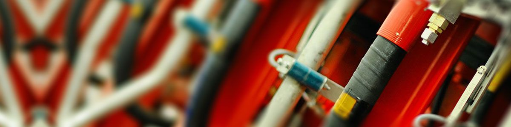

Промышленная гидравлика
Инжиниринг, сервис, продажи
Время работы:
8 00–16 45
Суббота, воскресенье: выходной
Инжиниринг, сервис, продажи
Время работы:
8 00–16 45
Суббота, воскресенье: выходной
Мы рады приветствовать Вас на сайте компании «БПИ». Наша компания имеет большой опыт в направлении промышленная гидравлика, мы разбираемся в том, что продаем и надеемся быть Вам полезными. Мы предлагает широкую номенклатуру гидравлических компонентов различных мировых производителей. Большое количество комплектующих находится на складе. Наши специалисты грамотно и качественно осуществляют подбор необходимых гидравлических компонентов по характеристикам, необходимых заказчику. Подбор аналогов других производителей.
Мы предлагаем решение проблем в области обслуживания и ремонта гидравлики. Стремимся к долгосрочным партнерским отношениям.
Гарантируем высокое качество в кратчайшие сроки!!!
Наша компания имеет большой опыт в направлении промышленная гидравлика, мы разбираемся в том, что продаем и надеемся быть Вам полезными. Мы предлагает широкую номенклатуру гидравлических компонентов различных мировых производителей. Большое количество комплектующих находится на складе. Наши специалисты грамотно и качественно осуществляют подбор необходимых гидравлических компонентов по характеристикам, необходимых заказчику. Подбор аналогов других производителей.
Проектирование гидросистем
Компания БПИ предоставляет услуги по разработке конструкторской документации на гидравлическое оборудование любой сложности. ПодробнееПроектирование гидростанций
Компания БПИ производит линейку гидравлических насосных станций для применения в различных областях промышленности. ПодробнееПроизводство гидростанций
C 2012 на базе БПИ было запущено производство гидростанций. За неполные четыре года мы спроектировали, произвели и поставили нашим клиентам более 800 гидростанций. Подробнее
Диагностика и ремонт гидравлики
Работа по диагностике производится в нашем сервисном центре или непосредственно на месте поломки (территория заказчика). Подробнее
Сервисный центр
Сервисный отдел компании БПИ был организован в 2012 году с целью удовлетворения требований заказчиков по ремонту и обслуживанию гидроагрегатов в гарантийный и послегарантийный периоды. ПодробнееГидрофикация
Хотите расширить функциональные возможности вашей грузовой автомобильной техники? Тогда вам подойдет предлагаемая нами услуга «гидрофикация грузовых автомобилей ПодробнееГидронасосы и гидромоторы
БПИ предлагает гидравлические насосы и моторы со склада и под заказ различных видов и производителей. ПодробнееГидроклапаны
Предохранительные клапана применяются в гидросистемах для ограничения рабочего давления до определенной, заранее заданной величины. ПодробнееГидрораспределители
Гидрораспределители служат для управления запуском, остановом и изменением направления потока рабочей жидкости под давлением. ПодробнееАксессуары для гидравлики
Мы поставляем в комплексе гидравлические аксессуары без которых гидросистема не может быть завершена ПодробнееГидроаккумуляторы
Гидроаккумуляторы -это устройства, которые сохраняют энергию в виде жидкости, находящейся под давлением. Подробнее